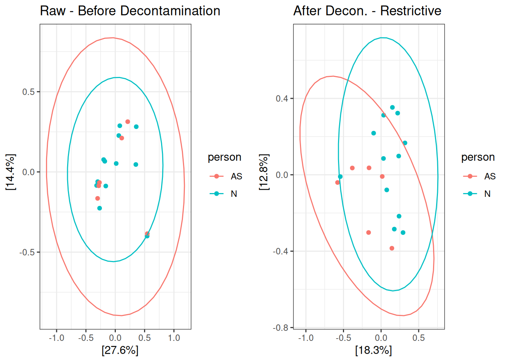
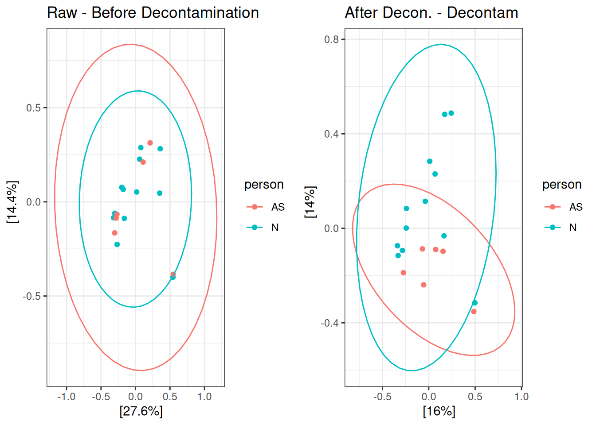
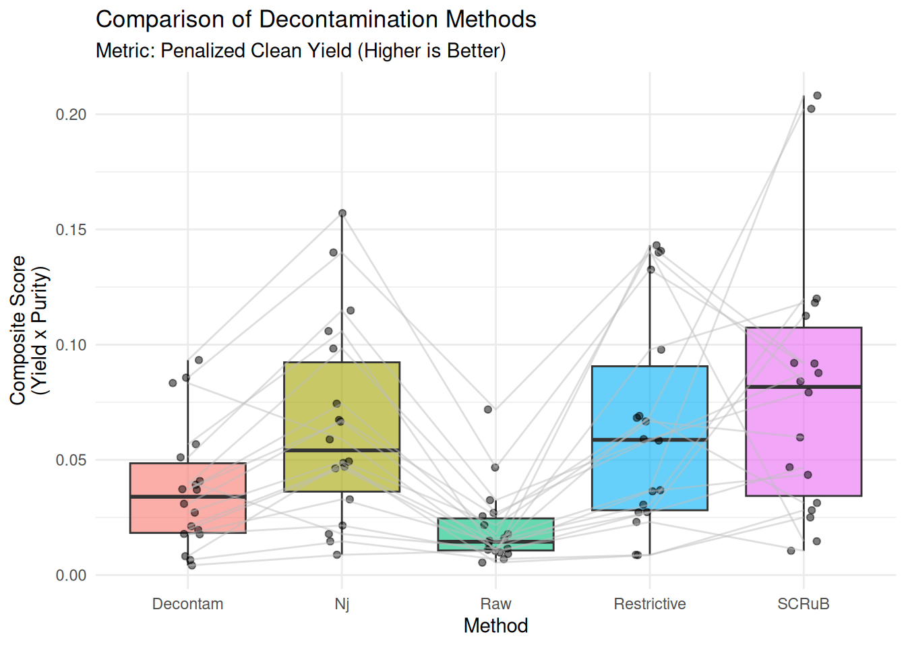
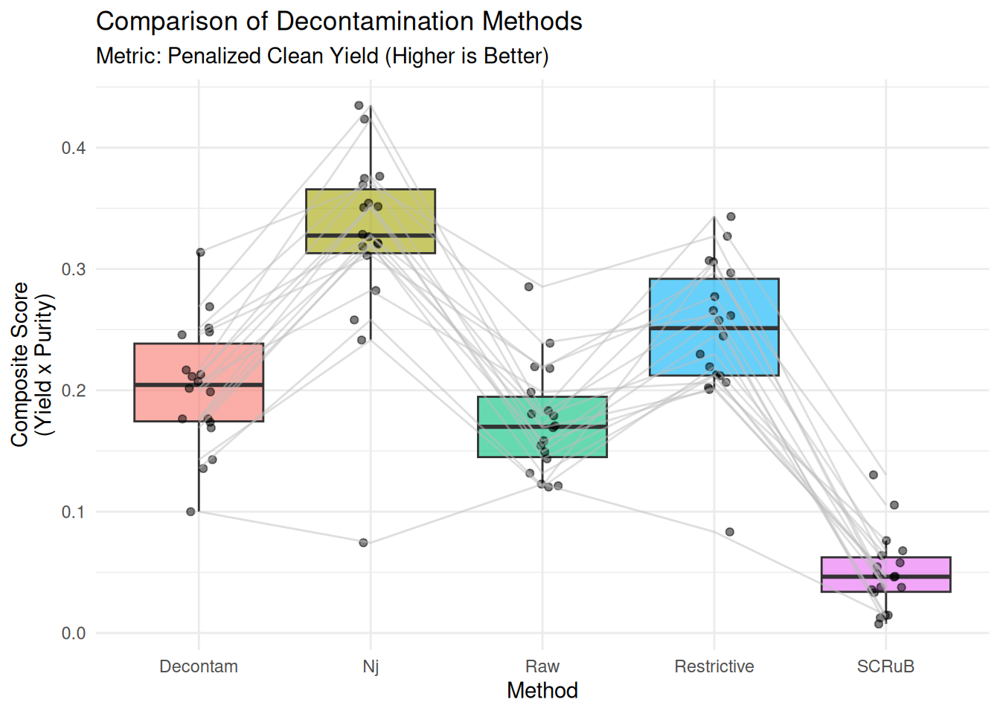
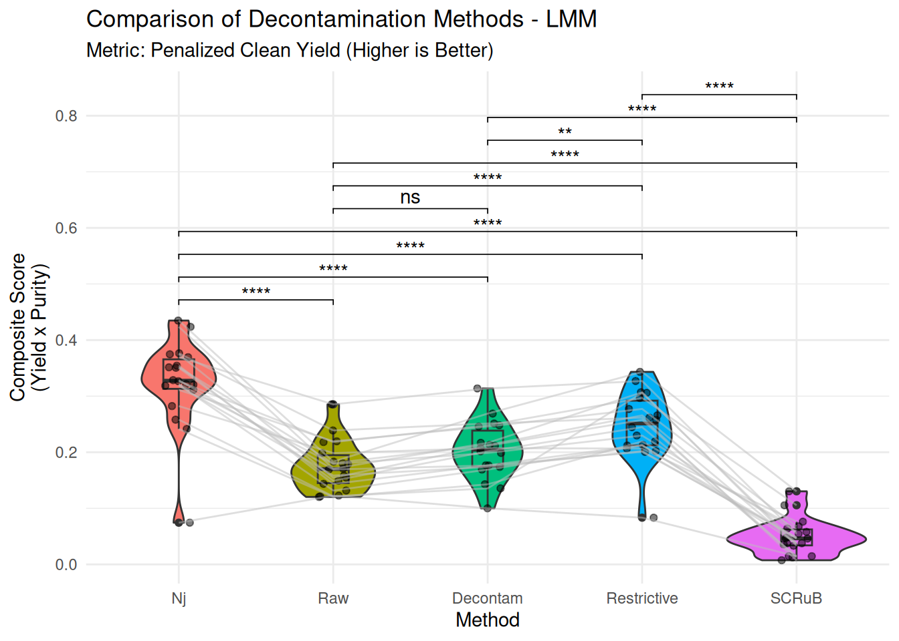
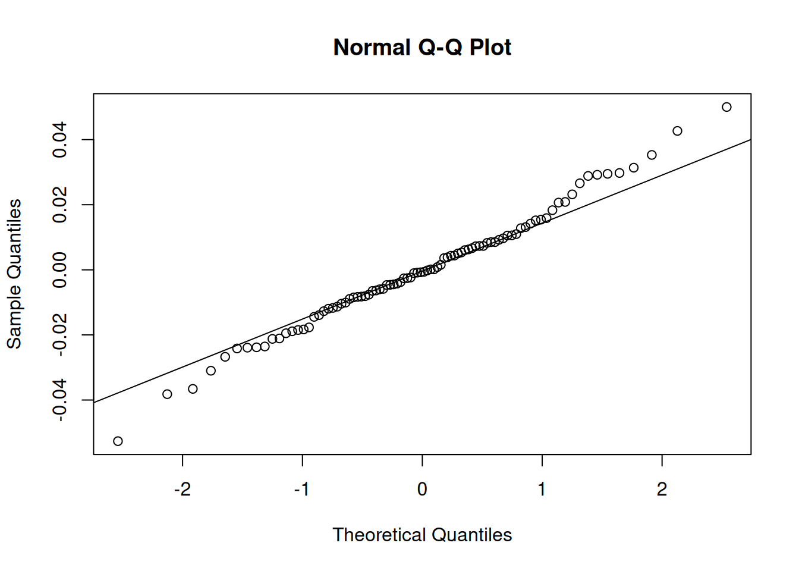
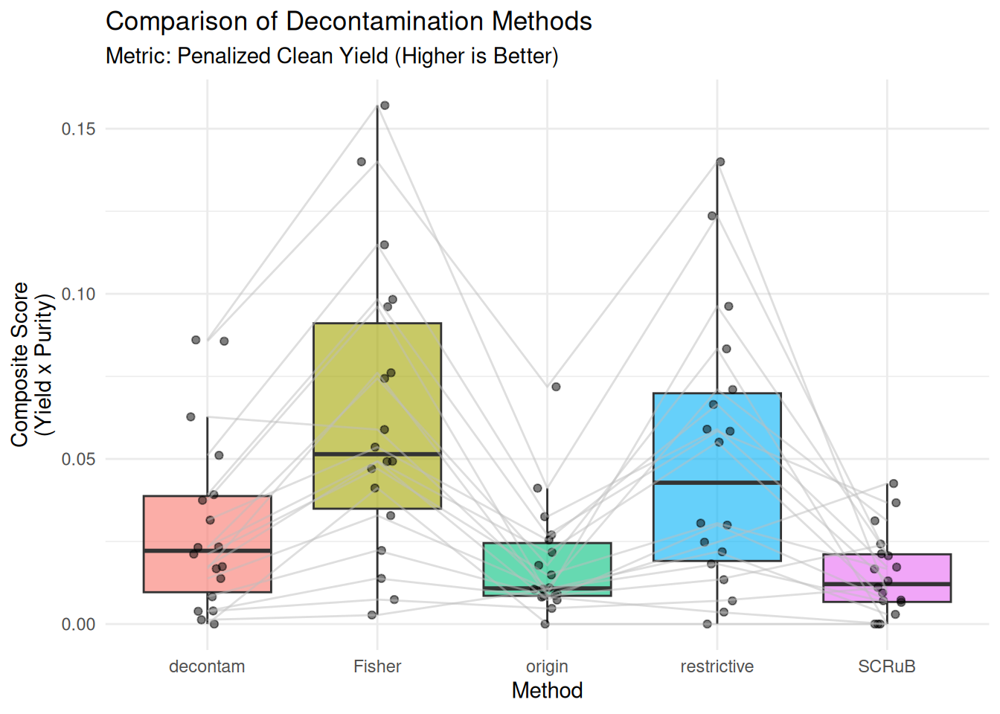

Code
library(phyloseq)
library(reshape2)
library(rstatix)
library(ggpubr)
library(microViz)
library(microbiome)
library(vegan)
library(Wrench)
library(tidyverse)
rm(list = ls())library(phyloseq)
library(reshape2)
library(rstatix)
library(ggpubr)
library(microViz)
library(microbiome)
library(vegan)
library(Wrench)
library(tidyverse)
rm(list = ls())Functions
Kolors <- c("#9d547c","#56ca63","#a357d6","cornflowerblue","#419d2a","sandybrown","red3","peachpuff","cyan","paleturquoise3","mistyrose","mediumpurple","mediumseagreen","mediumorchid","moccasin","orange4","olivedrab","midnightblue","papayawhip","palevioletred4","brown1","greenyellow","orchid","navy","darkred","navajowhite1","mistyrose1","grey85","#525fd6","red2","#8cbe3a","#c944aa","indianred3","#5ba557","#9e66cb","#c1b735","#6d82ec","grey25","#e69728","#6654b0","lightsalmon3","lightcyan1","khaki1","seagreen1","plum1","lightsteelblue1","palevioletred3","mintcream","magenta3","#799330","#da7fdf","#3c782c","#e44586","blue4","#63c996","#dc3f53","#49cbc8","#cf3f29","#4fabda","#da6c2b","#598bd1","#b78c24","#8d4191","#a0b971","slategray1","sienna","plum1","lightyellow1","lightskyblue3","linen","limegreen","cornsilk1","mediumaquamarine","gray14","gold3","darkviolet","#b2386a","#479d71","#ae4341","#2ba198","#e07557","#5361a3","#dda353","#aa98df","#5b6114","#dc89bf","#327243","slateblue1","#e57b94","#277257","#9b62a0","#bbab59","#98495a","#526229","#d8827d","#857624","gray40","#9a4a22","#7c7d46","mediumslateblue","lemonchiffon1","#e3a073","#9e6b33", "gray74","slateblue1","rosybrown3", "lawngreen","gainsboro","dodgerblue3","deeppink3","firebrick3", "orchid2", "olivedrab1", "ivory3", "darkseagreen", "bisque2", "darkgoldenrod2", "blue2", "skyblue", "seashell2", "turquoise", "tan1", "seagreen2", "palevioletred3", "linen", "steelblue4","ghostwhite","dodgerblue1","deeppink1","firebrick1", "limegreen", "purple3", "khaki3", "snow3", "darkslategray","darkorchid","lavender", "magenta2", "palegreen", "salmon", "maroon", "cyan2","#671408","#FAEBD7","#7FFFD4","#F0FFFF","#A52A2A","burlywood","cadetblue","#7FFF00","chocolate","cornsilk","slateblue1","#FF7F50","red1","#008B8B","darkgoldenrod1","darkolivegreen","darkorange4","white","hotpink","honeydew1","goldenrod2","darkgreen","oldlace","darkslategray3","navajowhite3","orchid4","gray25","#F0924D")
WrenchWrapper <- function(PhyloObjct, grp, roundUp = F){
cnt_table <- PhyloObjct %>% otu_table()
group <- PhyloObjct %>% sample_data() %>% pull(grp)
w <- wrench(cnt_table, condition = group)
# deseq.obj <- DESeqDataSetFromMatrix(cnt_table %>% as.data.frame(), DataFrame(group), ~group)
# DESeq2::sizeFactors(deseq.obj) <- w$nf
# cnt_table_normalized <- DESeq2::counts(deseq.obj, normalized=TRUE)
norm_factors <- w$nf
norm_counts <- sweep(cnt_table, 2, norm_factors, FUN = '/')
if(roundUp){norm_counts <- norm_counts %>% round()}
if(!is.null(phy_tree(PhyloObjct, errorIfNULL = F))){
return(phyloseq(otu_table(norm_counts, taxa_are_rows = T), tax_table(PhyloObjct %>% tax_table()), sample_data(PhyloObjct %>% sample_data()),
phy_tree(PhyloObjct)))
} else{
return(phyloseq(otu_table(norm_counts, taxa_are_rows = T), tax_table(PhyloObjct %>% tax_table()), sample_data(PhyloObjct %>% sample_data())))
}
}
##
append_AN_NR <- function(pseq, df_additional){
df_meta <- meta(pseq)
if(!"AN_NR" %in% colnames(df_meta)){
print("There must be AN_NR column!")
return(NA)
}
## check if info is already in the main data frame, warning if already exits
col_names_fea <- setdiff(colnames(df_additional), "AN_NR")
new_col_names_fea <- setdiff(col_names_fea, colnames(df_meta))
if(length(new_col_names_fea)==0){
warning("All new feature already exits, nothing to be added")
return(pseq)
}
if(length(new_col_names_fea) < length(col_names_fea)){
warning("partially info already there, add the rest!")
df_additional <- df_additional %>%
select(c("AN_NR", new_col_names_fea))
}
df_meta_new <- df_meta %>%
rownames_to_column(var = "SampleName") %>%
left_join(., df_additional, by = "AN_NR") %>%
column_to_rownames(var = "SampleName")
sample_data(pseq) <- df_meta_new
return(pseq)
}
## alpha plot function with LMM with fixed and random variables
AlphaPlot_Violin_LMM <- function(df, SampleID, strata, val){
## df: in pivot longer manner
## calc p value in manner of paired
## get y.position for ggplot
y_pos <- t_test(formula = as.formula(sprintf("%s ~ %s", val, strata)), data = df) %>% add_xy_position() %>% pull(y.position)
model <- lmer(as.formula(sprintf("%s ~ %s + (1|%s)", val, strata, SampleID)), data = df)
emm <- emmeans(model, specs = as.formula(sprintf("pairwise ~ %s", strata)))
contr <- contrast(emm, method = "pairwise")
p_add <- contr %>%
as_tibble() %>%
transmute(
group1 = sub(" - .*", "", contrast),
group2 = sub(".* - ", "", contrast),
estimate,
se = SE,
statistic = t.ratio,
df,
p = p.value
##method = "emmeans model-based t-test"
) %>%
add_significance() %>%
mutate(y.position = y_pos)
plt <- ggplot(df, aes(x = .data[[strata]], y = .data[[val]], fill = .data[[strata]])) +
geom_violin() +
#geom_boxplot(alpha = 0.6, outlier.shape = NA) +
geom_boxplot(width=0.2) +
geom_point(position = position_jitter(width = 0.1), alpha = 0.5) +
# Connect lines for the same sample to show paired changes
geom_line(aes(group = .data[[SampleID]]), color = "gray", alpha = 0.5) +
theme_minimal() +
labs(
title = "Comparison of Decontamination Methods - LMM",
subtitle = "Metric: Penalized Clean Yield (Higher is Better)",
y = "Composite Score\n(Yield x Purity)"
) +
theme(legend.position = "none")
plt <- plt + stat_pvalue_manual(p_add, label = "p.signif", inherit.aes = FALSE, tip.length = 0.01)
return(list(plt = plt, const = contr))
}
## alpha plot with Wilcon_test
AlphaPlot_Violin_Wilcox <- function(df, SampleID, strata, val, y_label = "Obsered species", subtitle = "The higher the better", ...){
## df: in pivot longer manner
## calc p value in manner of paired
## get y.position for ggplot
p_add <- wilcox_test(formula = as.formula(sprintf("%s ~ %s", val, strata)), data = df, paired = TRUE, ...) %>%
add_significance() %>%
add_xy_position() ##%>% pull(y.position)
#print(p_add)
plt <- ggplot(df, aes(x = .data[[strata]], y = .data[[val]], fill = .data[[strata]])) +
geom_violin() +
#geom_boxplot(alpha = 0.6, outlier.shape = NA) +
geom_boxplot(width=0.2) +
geom_point(position = position_jitter(width = 0.1), alpha = 0.5) +
# Connect lines for the same sample to show paired changes
geom_line(aes(group = .data[[SampleID]]), color = "gray", alpha = 0.5) +
theme_minimal() +
labs(
title = "Comparison of Decontamination Methods -Wilcox",
subtitle = "Metric: Penalized Clean Yield (Higher is Better)",
y = "Composite Score\n(Yield x Purity)"
) +
theme(legend.position = "none")
plt <- plt + stat_pvalue_manual(p_add, label = "p.adj.signif", inherit.aes = FALSE, tip.length = 0.01)
return(plt)
}#rm(list = ls())
##source("../../../add_code/Functions.R")
df_additionalInfo <- rprojroot::find_rstudio_root_file() %>%
file.path("meta/Mice_meta.xlsx") %>%
readxl::read_xlsx()
pseq_raw <- rprojroot::find_rstudio_root_file() %>%
file.path("data/Chap3/pseq_Proj5_postFilter_v04.rds") %>%
readRDS() %>%
ps_filter(ffpe.bulk == "bulk") %>%
ps_filter(true.control == "true") %>%
append_AN_NR(df_additional = df_additionalInfo) %>%
WrenchWrapper(grp = "Sex")
pseq_restrictive <- rprojroot::find_rstudio_root_file() %>%
file.path("data/Chap3/pseq_bulk_restrictive.rds") %>%
readRDS() %>%
append_AN_NR(df_additionalInfo) %>%
WrenchWrapper(grp = "Sex")
pseq_decontam <- rprojroot::find_rstudio_root_file() %>%
file.path("data/Chap3/pseq_bulk_decontam_p0.5.rds") %>%
readRDS() %>%
append_AN_NR(df_additionalInfo) %>%
WrenchWrapper(grp = "Sex")
pseq_SCRuB <- rprojroot::find_rstudio_root_file() %>%
file.path("data/Chap3/pseq_bulk_SCRuB.rds") %>%
readRDS() %>%
append_AN_NR(df_additionalInfo) %>%
WrenchWrapper(grp = "Sex")
pseq_Nj <- rprojroot::find_rstudio_root_file() %>%
file.path("data/Chap3/pseq_bulk_Fisher_v02.rds") %>%
readRDS() %>%
append_AN_NR(df_additionalInfo) %>%
WrenchWrapper(grp = "Sex")Due to lacking of ground truth or mock community. Here are the alternative assess approaches we could use:
Assessment of batch effect removal
Divergence from Negative Controls
Biologically meaningful of Consensus taxa
Overlap with known true taxa / contaminants.
Main idea: A good decontamination method should reduce technical variation. In this case is the technician.
Approach: Perform Ordination (PCoA) and PERMANOVA (adonis2).
Metric: Check if the variance explained (R2) by “Sequencing Run” or “Extraction Batch” decreases after decontamination.
Logic: Real tumor microbiomes shouldn’t cluster by which technician sequenced.
Write a wrapper
library(gridExtra)
### simple ord plot and permanova
assess_batch_effect <- function(ps, method = "PCoA", distance = "bray", batch = "person", gg_title = "raw"){
ord <- ordinate(ps, method = method, distance = distance)
#ord_clean <- ordinate(pseq_clean, method = "PCoA", distance = "bray")
p1 <- plot_ordination(ps, ord, color = batch) +
stat_ellipse(type = "norm") + # Adds confidence ellipses per batch
ggtitle(gg_title) +
theme_bw()
## calc distance
dis <- distance(ps, method = distance)
#dist_clean <- distance(pseq_clean, method = "bray")
df_meta <- meta(ps)
set.seed(210488)
permanova_raw <- adonis2(as.formula(paste0("dis ~ ", batch)), data = df_meta, permutations = 9999)
res = list(plt = p1, permanova = permanova_raw)
return(res)
}res_raw <- assess_batch_effect(pseq_raw, batch = "person", gg_title = "Raw - Before Decontamination")
res_restrictive <- assess_batch_effect(pseq_restrictive, batch = "person", gg_title = "After Decon. - Restrictive")
# 4. Display side-by-side
grid.arrange(res_raw$plt, res_restrictive$plt, ncol = 2)
# --- PRINT RESULTS ---
print("--- RAW DATA BATCH EFFECT ---")[1] "--- RAW DATA BATCH EFFECT ---"print(res_raw$permanova)Permutation test for adonis under reduced model
Permutation: free
Number of permutations: 9999
adonis2(formula = as.formula(paste0("dis ~ ", batch)), data = df_meta, permutations = 9999)
Df SumOfSqs R2 F Pr(>F)
Model 1 0.4126 0.07527 1.3024 0.1776
Residual 16 5.0688 0.92473
Total 17 5.4814 1.00000 print("--- CLEAN DATA BATCH EFFECT ---")[1] "--- CLEAN DATA BATCH EFFECT ---"print(res_restrictive$permanova)Permutation test for adonis under reduced model
Permutation: free
Number of permutations: 9999
adonis2(formula = as.formula(paste0("dis ~ ", batch)), data = df_meta, permutations = 9999)
Df SumOfSqs R2 F Pr(>F)
Model 1 0.6762 0.09738 1.7261 0.0195 *
Residual 16 6.2679 0.90262
Total 17 6.9441 1.00000
---
Signif. codes: 0 '***' 0.001 '**' 0.01 '*' 0.05 '.' 0.1 ' ' 1res_decontam <- assess_batch_effect(pseq_decontam, gg_title = "After Decon. - Decontam")
grid.arrange(res_raw$plt, res_decontam$plt, ncol = 2)
# --- PRINT RESULTS ---
print("--- RAW DATA BATCH EFFECT ---")[1] "--- RAW DATA BATCH EFFECT ---"print(res_raw$permanova)Permutation test for adonis under reduced model
Permutation: free
Number of permutations: 9999
adonis2(formula = as.formula(paste0("dis ~ ", batch)), data = df_meta, permutations = 9999)
Df SumOfSqs R2 F Pr(>F)
Model 1 0.4126 0.07527 1.3024 0.1776
Residual 16 5.0688 0.92473
Total 17 5.4814 1.00000 print("--- CLEAN DATA BATCH EFFECT ---")[1] "--- CLEAN DATA BATCH EFFECT ---"print(res_decontam$permanova)Permutation test for adonis under reduced model
Permutation: free
Number of permutations: 9999
adonis2(formula = as.formula(paste0("dis ~ ", batch)), data = df_meta, permutations = 9999)
Df SumOfSqs R2 F Pr(>F)
Model 1 0.6312 0.08875 1.5583 0.0352 *
Residual 16 6.4813 0.91125
Total 17 7.1126 1.00000
---
Signif. codes: 0 '***' 0.001 '**' 0.01 '*' 0.05 '.' 0.1 ' ' 1res_SCRuB <- assess_batch_effect(pseq_SCRuB, gg_title = "After Decon. - SCRuB")
grid.arrange(res_raw$plt, res_SCRuB$plt, ncol = 2)
# --- PRINT RESULTS ---
print("--- RAW DATA BATCH EFFECT ---")[1] "--- RAW DATA BATCH EFFECT ---"print(res_raw$permanova)Permutation test for adonis under reduced model
Permutation: free
Number of permutations: 9999
adonis2(formula = as.formula(paste0("dis ~ ", batch)), data = df_meta, permutations = 9999)
Df SumOfSqs R2 F Pr(>F)
Model 1 0.4126 0.07527 1.3024 0.1776
Residual 16 5.0688 0.92473
Total 17 5.4814 1.00000 print("--- CLEAN DATA BATCH EFFECT ---")[1] "--- CLEAN DATA BATCH EFFECT ---"print(res_SCRuB$permanova)Permutation test for adonis under reduced model
Permutation: free
Number of permutations: 9999
adonis2(formula = as.formula(paste0("dis ~ ", batch)), data = df_meta, permutations = 9999)
Df SumOfSqs R2 F Pr(>F)
Model 1 0.6650 0.09197 1.6205 0.0291 *
Residual 16 6.5661 0.90803
Total 17 7.2311 1.00000
---
Signif. codes: 0 '***' 0.001 '**' 0.01 '*' 0.05 '.' 0.1 ' ' 1res_Nj <- assess_batch_effect(pseq_Nj, gg_title = "After Decon. - Nejman")
grid.arrange(res_raw$plt, res_Nj$plt, ncol = 2)
# --- PRINT RESULTS ---
print("--- RAW DATA BATCH EFFECT ---")[1] "--- RAW DATA BATCH EFFECT ---"print(res_raw$permanova)Permutation test for adonis under reduced model
Permutation: free
Number of permutations: 9999
adonis2(formula = as.formula(paste0("dis ~ ", batch)), data = df_meta, permutations = 9999)
Df SumOfSqs R2 F Pr(>F)
Model 1 0.4126 0.07527 1.3024 0.1776
Residual 16 5.0688 0.92473
Total 17 5.4814 1.00000 print("--- CLEAN DATA BATCH EFFECT ---")[1] "--- CLEAN DATA BATCH EFFECT ---"print(res_Nj$permanova)Permutation test for adonis under reduced model
Permutation: free
Number of permutations: 9999
adonis2(formula = as.formula(paste0("dis ~ ", batch)), data = df_meta, permutations = 9999)
Df SumOfSqs R2 F Pr(>F)
Model 1 0.6047 0.09167 1.6147 0.0486 *
Residual 16 5.9922 0.90833
Total 17 6.5970 1.00000
---
Signif. codes: 0 '***' 0.001 '**' 0.01 '*' 0.05 '.' 0.1 ' ' 1df_overall_R2_pval <- tibble(Method = character(0),
R2 = double(0),
p_value = double(0))
df_overall_R2_pval <- df_overall_R2_pval %>%
add_row(Method = "Raw", R2 = res_raw$permanova$R2[1], p_value = res_raw$permanova$`Pr(>F)`[1]) %>%
add_row(Method = "Restrictive", R2 = res_restrictive$permanova$R2[1], p_value = res_restrictive$permanova$`Pr(>F)`[1]) %>%
add_row(Method = "decontam", R2 = res_decontam$permanova$R2[1], p_value = res_decontam$permanova$`Pr(>F)`[1]) %>%
add_row(Method = "SCRuB", R2 = res_SCRuB$permanova$R2[1], p_value = res_SCRuB$permanova$`Pr(>F)`[1]) %>%
add_row(Method = "Nejman", R2 = res_Nj$permanova$R2[1], p_value = res_Nj$permanova$`Pr(>F)`[1])
print(df_overall_R2_pval)# A tibble: 5 × 3
Method R2 p_value
<chr> <dbl> <dbl>
1 Raw 0.0753 0.178
2 Restrictive 0.0974 0.0195
3 decontam 0.0887 0.0352
4 SCRuB 0.0920 0.0291
5 Nejman 0.0917 0.0486Conclusion: For this dataset, this is not the method we like to choose.
Approach: perform Inter-group dissimilarity and Wilcox paired test, following by visualization.
Metric: Calculate the Jensen-Shannon Divergence (or Bray-Curtis) between samples and the pool of negative controls.
Logic: the decontamination method should maximize the dissimilarity between true PDAC samples and NCTs.
#rm(list = ls())
rm(list = setdiff(ls(), lsf.str()))
pseq_nct <- rprojroot::find_rstudio_root_file() %>%
file.path("data/Chap3/pseq_Proj5_postFilter_v04.rds") %>%
readRDS() %>%
ps_filter(ffpe.bulk == "bulk") %>%
ps_filter(true.control != "true")Because we could not apply wrench normalization for NCTs, thus we have to use rarefaction
s_size <- 5000
pseq_raw_both <- rprojroot::find_rstudio_root_file() %>%
file.path(., "data/Chap3/pseq_Proj5_postFilter_v04.rds") %>%
readRDS() %>%
ps_filter(ffpe.bulk == "bulk") %>%
rarefy_even_depth(sample.size = s_size)
pseq_restrictive_both <- rprojroot::find_rstudio_root_file() %>%
file.path("data/Chap3/pseq_bulk_restrictive.rds") %>%
readRDS() %>%
merge_phyloseq(pseq_nct) %>%
rarefy_even_depth(sample.size = s_size)
pseq_decontam_both <- rprojroot::find_rstudio_root_file() %>%
file.path(., "data/Chap3/pseq_bulk_decontam_p0.5.rds") %>%
readRDS() %>%
merge_phyloseq(pseq_nct) %>%
rarefy_even_depth(sample.size = s_size)
pseq_SCRuB_both <- rprojroot::find_rstudio_root_file() %>%
file.path("data/Chap3/pseq_bulk_SCRuB.rds") %>%
readRDS() %>%
merge_phyloseq(pseq_nct) %>%
rarefy_even_depth(sample.size = s_size)
pseq_Nj_both <- rprojroot::find_rstudio_root_file() %>%
file.path("data/Chap3/pseq_bulk_Fisher_v02.rds") %>%
readRDS() %>%
merge_phyloseq(pseq_nct) %>%
rarefy_even_depth(sample.size = s_size)Write a wrapper
get_dist_to_controls <- function(ps, group_col, true_label = "true", control_label = "NCT", metric = "bray"){
if(tolower(metric) == "jsd") {
ps <- transform_sample_counts(ps, function(x) x / sum(x))
}
dist_mat <- ps %>%
distance(method = metric) %>%
as.matrix()
#print(dist_mat)
meta <- meta(ps)
true_ids <- rownames(meta)[meta[[group_col]] == true_label]
ctrl_ids <- rownames(meta)[meta[[group_col]] == control_label]
#print(ctrl_ids)
sub_mat <- dist_mat[true_ids, ctrl_ids, drop = FALSE]
#print(sub_mat)
mean_dists <- rowMeans(sub_mat, na.rm = TRUE)
#print(mean_dists)
median_dists <- apply(sub_mat, 1, median, na.rm = TRUE)
#print(median_dists)
return(data.frame(SampleID = names(mean_dists), MeanDist = mean_dists, MedianDist = median_dists))
}
### Wrapper of statistics and ggplots
wrapper_dist_to_controls <- function(ps_raw, ps_clean, group_col, true_label = "true", control_label = "NCT", metric = "bray", decontam_name = "None"){
df_raw <- get_dist_to_controls(ps_raw, group_col, true_label, control_label, metric)
df_clean <- get_dist_to_controls(ps_clean, group_col, true_label, control_label, metric)
df_raw <- df_raw %>% select(SampleID, MeanDist_raw = MeanDist)
df_clean <- df_clean %>% select(SampleID, MeanDist_clean = MeanDist)
#print()
df_stats <- merge(df_raw, df_clean, by = "SampleID")
test_results <- wilcox.test(df_stats$MeanDist_clean, df_stats$MeanDist_raw,
paired = TRUE, alternative = "greater")
df_long <- melt(df_stats, id.vars="SampleID", measure.vars=c("MeanDist_raw", "MeanDist_clean"))
plt <- ggplot(df_long, aes(x=variable, y=value, fill=variable)) +
geom_boxplot(alpha=0.6) +
geom_point(aes(group=SampleID), alpha=0.5) + # Adds the dots
geom_line(aes(group=SampleID), alpha=0.2) + # Connects the dots (shows paired change)
theme_bw() +
labs(title = "Divergence from Negative Controls",
subtitle = paste("P-value:", format.pval(test_results$p.value, digits=4)),
y = "Mean JSD to Negative Controls",
x = "Method Stage") +
scale_x_discrete(labels=c("Raw", decontam_name))
return(list(test_results = test_results, plt = plt))
}## calc distnace of each sample to negative control group
df_raw <- get_dist_to_controls(pseq_raw_both, group_col = "true.control",
true_label = "true", control_label = "NCT",
metric = "jsd")
df_raw <- df_raw %>%
rename(MeanDist_raw = MeanDist, MedianDist_raw = MedianDist)res <- wrapper_dist_to_controls(pseq_raw_both, pseq_restrictive_both,
group_col = "true.control",
true_label = "true", control_label = "NCT",
metric = "jsd", decontam_name = "Restrictive")
print(res$test_results)
Wilcoxon signed rank exact test
data: df_stats$MeanDist_clean and df_stats$MeanDist_raw
V = 91, p-value = 0.0001221
alternative hypothesis: true location shift is greater than 0GGplot
res$plt
res <- wrapper_dist_to_controls(pseq_raw_both, pseq_decontam_both,
group_col = "true.control",
true_label = "true", control_label = "NCT",
metric = "jsd", decontam_name = "decontam")
print(res$test_results)
Wilcoxon signed rank exact test
data: df_stats$MeanDist_clean and df_stats$MeanDist_raw
V = 91, p-value = 0.0001221
alternative hypothesis: true location shift is greater than 0GGplot
res$plt
res <- wrapper_dist_to_controls(pseq_raw_both, pseq_SCRuB_both,
group_col = "true.control",
true_label = "true", control_label = "NCT",
metric = "jsd", decontam_name = "SCRuB")
print(res$test_results)
Wilcoxon signed rank exact test
data: df_stats$MeanDist_clean and df_stats$MeanDist_raw
V = 105, p-value = 6.104e-05
alternative hypothesis: true location shift is greater than 0res$plt
res <- wrapper_dist_to_controls(pseq_raw_both, pseq_Nj_both,
group_col = "true.control",
true_label = "true", control_label = "NCT",
metric = "jsd", decontam_name = "Nejman")
print(res$test_results)
Wilcoxon signed rank exact test
data: df_stats$MeanDist_clean and df_stats$MeanDist_raw
V = 78, p-value = 0.0002441
alternative hypothesis: true location shift is greater than 0res$plt
Conclusion: all method performer well!
Approach: design a measure quantifying the quality of decontamination approach by balancing the yield and purity explained below.
Metric: Yield -> number of putative significant true taxa not in NCTs / number of observed species. Purity -> number of putative significant true taxa not in NCTs / whole number of putative contaminants.
Logic: a good decontamination methods should give results whose taxa is less overlap with known high prevalence contaminants in large set of NCTs, while not over-removing true taxa.
In the analysis, we investigate 3 defined methods for putative significant true taxa. The season: even though after decontamination, not all remained taxa are significant and play important rules.
library(lme4) # Linear Mixed Models (for repeated measures)
library(lmerTest) # P-values for Mixed Models
library(emmeans) # Pairwise comparisons
#rm(list = ls())
rm(list = setdiff(ls(), lsf.str()))
df_all <- rprojroot::find_rstudio_root_file() %>%
file.path("results/Chap3/survey_overlap_NCT/df_all_FisherV02_concat.tsv") %>%
read_table()For each of a method, we will conduct the following analyses:
Visualization of the data.
Linear Mixed Model (LMM) where fixed effect is decontamination methods, and random effect is SampleID (Accounting for biological variation between samples).
Perform pairwise comparisons.
Significant taxa are ones whose abundance are at least 1 percent.
df_analysis <- df_all %>%
mutate(Method2 = if_else(Method=="Fisher", "Nj", Method)) %>%
select(SampleID, Method = Method2, observed, B = NumAbund_1Per, C = NumInNCT_Abd) %>%
mutate(
# 1. Calculate "Clean Species" count
Clean_Count = B - C,
# 2. Calculate Yield: (Clean Species / Original Total)
Yield = Clean_Count / observed,
# 3. Calculate Purity: (Clean Species / Total Kept)
# If Col_B_Kept is 0, Purity is 0
Purity = ifelse(B > 0, Clean_Count / B, 0),
# 4. COMPOSITE METRIC: Penalized Clean Yield
# This rewards keeping good data AND having a clean final table
Composite_Score = Yield * Purity
)
# Inspect the calculated metric
head(df_analysis)# A tibble: 6 × 9
SampleID Method observed B C Clean_Count Yield Purity Composite_Score
<chr> <chr> <dbl> <dbl> <dbl> <dbl> <dbl> <dbl> <dbl>
1 2022_02… origin 211 11 7 4 0.0190 0.364 0.00689
2 2022_02… origin 395 24 8 16 0.0405 0.667 0.0270
3 2022_02… origin 90 10 6 4 0.0444 0.4 0.0178
4 2022_02… origin 237 10 5 5 0.0211 0.5 0.0105
5 2022_02… origin 385 15 6 9 0.0234 0.6 0.0140
6 2022_02… origin 218 8 4 4 0.0183 0.5 0.00917Visualization
ggplot(df_analysis, aes(x = Method, y = Composite_Score, fill = Method)) +
geom_boxplot(alpha = 0.6, outlier.shape = NA) +
geom_point(position = position_jitter(width = 0.1), alpha = 0.5) +
# Connect lines for the same sample to show paired changes
geom_line(aes(group = SampleID), color = "gray", alpha = 0.5) +
theme_minimal() +
labs(
title = "Comparison of Decontamination Methods",
subtitle = "Metric: Penalized Clean Yield (Higher is Better)",
y = "Composite Score\n(Yield x Purity)"
) +
theme(legend.position = "none")
model <- lmer(Composite_Score ~ Method + (1|SampleID), data = df_analysis)
# Check assumptions (Residuals should be roughly normal)
qqnorm(resid(model))
qqline(resid(model))
The normality assumption of residual for LMM is almost satisfied.
## ANOVA
print(anova(model))Type III Analysis of Variance Table with Satterthwaite's method
Sum Sq Mean Sq NumDF DenDF F value Pr(>F)
Method 0.042803 0.010701 4 68 9.7723 2.639e-06 ***
---
Signif. codes: 0 '***' 0.001 '**' 0.01 '*' 0.05 '.' 0.1 ' ' 1Pairwise
# Perform pairwise comparisons with Tukey adjustment for multiple testing
emm <- emmeans(model, specs = pairwise ~ Method)
cat("\n=== Pairwise Differences ===\n")
=== Pairwise Differences ===print(emm$contrasts) contrast estimate SE df t.ratio p.value
decontam - Nj -0.027361 0.011 68 -2.481 0.1072
decontam - origin 0.017432 0.011 68 1.580 0.5149
decontam - restrictive -0.027586 0.011 68 -2.501 0.1024
decontam - SCRuB -0.043221 0.011 68 -3.918 0.0019
Nj - origin 0.044794 0.011 68 4.061 0.0012
Nj - restrictive -0.000225 0.011 68 -0.020 1.0000
Nj - SCRuB -0.015860 0.011 68 -1.438 0.6057
origin - restrictive -0.045018 0.011 68 -4.081 0.0011
origin - SCRuB -0.060654 0.011 68 -5.499 <0.0001
restrictive - SCRuB -0.015635 0.011 68 -1.418 0.6187
Degrees-of-freedom method: kenward-roger
P value adjustment: tukey method for comparing a family of 5 estimates cat("\n=== emmeans ===\n")
=== emmeans ===print(emm$emmeans) Method emmean SE df lower.CL upper.CL
decontam 0.0376 0.00962 57.9 0.018393 0.0569
Nj 0.0650 0.00962 57.9 0.045754 0.0843
origin 0.0202 0.00962 57.9 0.000961 0.0395
restrictive 0.0652 0.00962 57.9 0.045979 0.0845
SCRuB 0.0809 0.00962 57.9 0.061614 0.1001
Degrees-of-freedom method: kenward-roger
Confidence level used: 0.95 Conclusion: For this method, SCRuB seem to be outperform others.
Taxa with prevalence 50% are considered significant
df_analysis <- df_all %>%
mutate(Method2 = if_else(Method=="Fisher", "Nj", Method)) %>%
select(SampleID, Method = Method2, observed, B = NumPrev_50Per, C = NumInNCT_prev) %>%
mutate(
# 1. Calculate "Clean Species" count
Clean_Count = B - C,
# 2. Calculate Yield: (Clean Species / Original Total)
Yield = Clean_Count / observed,
# 3. Calculate Purity: (Clean Species / Total Kept)
# If Col_B_Kept is 0, Purity is 0
Purity = ifelse(B > 0, Clean_Count / B, 0),
# 4. COMPOSITE METRIC: Penalized Clean Yield
# This rewards keeping good data AND having a clean final table
Composite_Score = Yield * Purity
)
# Inspect the calculated metric
head(df_analysis)# A tibble: 6 × 9
SampleID Method observed B C Clean_Count Yield Purity Composite_Score
<chr> <chr> <dbl> <dbl> <dbl> <dbl> <dbl> <dbl> <dbl>
1 2022_02_… origin 211 140 56 84 0.398 0.6 0.239
2 2022_02_… origin 395 204 91 113 0.286 0.554 0.158
3 2022_02_… origin 90 71 43 28 0.311 0.394 0.123
4 2022_02_… origin 237 150 66 84 0.354 0.56 0.198
5 2022_02_… origin 385 203 88 115 0.299 0.567 0.169
6 2022_02_… origin 218 151 66 85 0.390 0.563 0.219ggplot(df_analysis, aes(x = Method, y = Composite_Score, fill = Method)) +
geom_boxplot(alpha = 0.6, outlier.shape = NA) +
geom_point(position = position_jitter(width = 0.1), alpha = 0.5) +
# Connect lines for the same sample to show paired changes
geom_line(aes(group = SampleID), color = "gray", alpha = 0.5) +
theme_minimal() +
labs(
title = "Comparison of Decontamination Methods",
subtitle = "Metric: Penalized Clean Yield (Higher is Better)",
y = "Composite Score\n(Yield x Purity)"
) +
theme(legend.position = "none")
model <- lmer(Composite_Score ~ Method + (1|SampleID), data = df_analysis)
# Check assumptions (Residuals should be roughly normal)
qqnorm(resid(model))
qqline(resid(model))
The normality assumption for LMM here is satisfied perfectly.
## ANOVA
print(anova(model))Type III Analysis of Variance Table with Satterthwaite's method
Sum Sq Mean Sq NumDF DenDF F value Pr(>F)
Method 0.73319 0.1833 4 68 121.19 < 2.2e-16 ***
---
Signif. codes: 0 '***' 0.001 '**' 0.01 '*' 0.05 '.' 0.1 ' ' 1Pairwise
# Perform pairwise comparisons with Tukey adjustment for multiple testing
emm <- emmeans(model, specs = pairwise ~ Method)
cat("\n=== Pairwise Differences ===\n")
=== Pairwise Differences ===print(emm$contrasts) contrast estimate SE df t.ratio p.value
decontam - Nj -0.1204 0.013 68 -9.287 <0.0001
decontam - origin 0.0281 0.013 68 2.168 0.2042
decontam - restrictive -0.0446 0.013 68 -3.439 0.0086
decontam - SCRuB 0.1533 0.013 68 11.829 <0.0001
Nj - origin 0.1485 0.013 68 11.456 <0.0001
Nj - restrictive 0.0758 0.013 68 5.848 <0.0001
Nj - SCRuB 0.2737 0.013 68 21.116 <0.0001
origin - restrictive -0.0727 0.013 68 -5.607 <0.0001
origin - SCRuB 0.1252 0.013 68 9.660 <0.0001
restrictive - SCRuB 0.1979 0.013 68 15.267 <0.0001
Degrees-of-freedom method: kenward-roger
P value adjustment: tukey method for comparing a family of 5 estimates cat("\n=== emmeans ===\n")
=== emmeans ===print(emm$emmeans) Method emmean SE df lower.CL upper.CL
decontam 0.2028 0.0132 41 0.1762 0.2295
Nj 0.3232 0.0132 41 0.2966 0.3499
origin 0.1747 0.0132 41 0.1481 0.2014
restrictive 0.2474 0.0132 41 0.2207 0.2741
SCRuB 0.0495 0.0132 41 0.0228 0.0761
Degrees-of-freedom method: kenward-roger
Confidence level used: 0.95 Conclusion: Nejman procedure with Fisher exact test outperforms the rest.
Alternative using LLM
df_analysis$Method <- factor(df_analysis$Method, levels = c("Nj", "origin", "decontam", "restrictive", "SCRuB"))
res <- AlphaPlot_Violin_LMM(df_analysis, SampleID = "SampleID", strata = "Method", val = "Composite_Score")
res$plt
AlphaPlot_Violin_Wilcox(df_analysis, SampleID = "SampleID", strata = "Method", val = "Composite_Score", y_label = "score", subtitle = "vxc", comparisons = list(c("Nj", "origin"), c("Nj", "decontam"), c("Nj", "restrictive"), c("Nj", "SCRuB")), alternative = "greater")
Combine two above methods.
df_analysis <- df_all %>%
select(SampleID, Method, observed, B = NumPrev_Abd, C = NumInNCT_both) %>%
mutate(
# 1. Calculate "Clean Species" count
Clean_Count = B - C,
# 2. Calculate Yield: (Clean Species / Original Total)
Yield = Clean_Count / observed,
# 3. Calculate Purity: (Clean Species / Total Kept)
# If Col_B_Kept is 0, Purity is 0
Purity = ifelse(B > 0, Clean_Count / B, 0),
# 4. COMPOSITE METRIC: Penalized Clean Yield
# This rewards keeping good data AND having a clean final table
Composite_Score = Yield * Purity
)
# Inspect the calculated metric
head(df_analysis)# A tibble: 6 × 9
SampleID Method observed B C Clean_Count Yield Purity Composite_Score
<chr> <chr> <dbl> <dbl> <dbl> <dbl> <dbl> <dbl> <dbl>
1 2022_02… origin 211 9 6 3 0.0142 0.333 0.00474
2 2022_02… origin 395 24 8 16 0.0405 0.667 0.0270
3 2022_02… origin 90 10 6 4 0.0444 0.4 0.0178
4 2022_02… origin 237 10 5 5 0.0211 0.5 0.0105
5 2022_02… origin 385 12 5 7 0.0182 0.583 0.0106
6 2022_02… origin 218 8 4 4 0.0183 0.5 0.00917ggplot(df_analysis, aes(x = Method, y = Composite_Score, fill = Method)) +
geom_boxplot(alpha = 0.6, outlier.shape = NA) +
geom_point(position = position_jitter(width = 0.1), alpha = 0.5) +
# Connect lines for the same sample to show paired changes
geom_line(aes(group = SampleID), color = "gray", alpha = 0.5) +
theme_minimal() +
labs(
title = "Comparison of Decontamination Methods",
subtitle = "Metric: Penalized Clean Yield (Higher is Better)",
y = "Composite Score\n(Yield x Purity)"
) +
theme(legend.position = "none")
model <- lmer(Composite_Score ~ Method + (1|SampleID), data = df_analysis)
# Check assumptions (Residuals should be roughly normal)
qqnorm(resid(model))
qqline(resid(model))
Normality assumption does not fit at the tails.
## ANOVA
print(anova(model))Type III Analysis of Variance Table with Satterthwaite's method
Sum Sq Mean Sq NumDF DenDF F value Pr(>F)
Method 0.031131 0.0077828 4 68 18.947 1.658e-10 ***
---
Signif. codes: 0 '***' 0.001 '**' 0.01 '*' 0.05 '.' 0.1 ' ' 1Pairwise
# Perform pairwise comparisons with Tukey adjustment for multiple testing
emm <- emmeans(model, specs = pairwise ~ Method)
cat("\n=== Pairwise Differences ===\n")
=== Pairwise Differences ===print(emm$contrasts) contrast estimate SE df t.ratio p.value
decontam - Fisher -0.0338 0.00676 68 -5.002 <0.0001
decontam - origin 0.0109 0.00676 68 1.609 0.4968
decontam - restrictive -0.0209 0.00676 68 -3.090 0.0235
decontam - SCRuB 0.0144 0.00676 68 2.127 0.2206
Fisher - origin 0.0447 0.00676 68 6.612 <0.0001
Fisher - restrictive 0.0129 0.00676 68 1.913 0.3207
Fisher - SCRuB 0.0482 0.00676 68 7.130 <0.0001
origin - restrictive -0.0317 0.00676 68 -4.699 0.0001
origin - SCRuB 0.0035 0.00676 68 0.518 0.9852
restrictive - SCRuB 0.0352 0.00676 68 5.217 <0.0001
Degrees-of-freedom method: kenward-roger
P value adjustment: tukey method for comparing a family of 5 estimates cat("\n=== emmeans ===\n")
=== emmeans ===print(emm$emmeans) Method emmean SE df lower.CL upper.CL
decontam 0.0293 0.0073 36.8 1.45e-02 0.0441
Fisher 0.0631 0.0073 36.8 4.83e-02 0.0779
origin 0.0184 0.0073 36.8 3.59e-03 0.0332
restrictive 0.0501 0.0073 36.8 3.53e-02 0.0649
SCRuB 0.0149 0.0073 36.8 9.31e-05 0.0297
Degrees-of-freedom method: kenward-roger
Confidence level used: 0.95 Conclusion: Nejman procedure and restrictive seem to perform well.